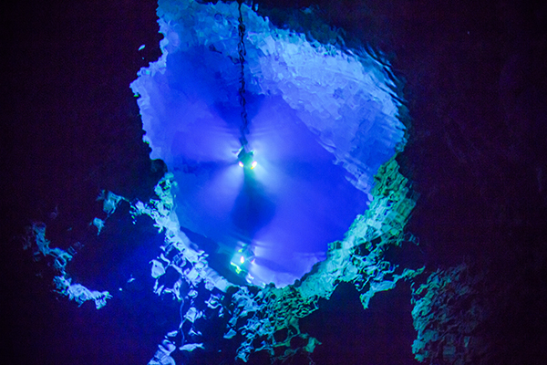
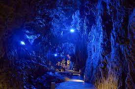

龍泉洞


龍泉洞は岩手県下閉伊郡岩泉町にある鍾乳洞です。日本三大鍾乳洞の
一つとされ、洞内に住むコウモリと共に国の天然記念物に指定されて
います。洞内の水は世界でも有数の透明度を誇り、これは、地下深く
に潜り込んだ沢の水が地底湖で湧出するからです。最近ではその美し
さゆえにデートスポットとして遠方から訪れる人も。
観光情報
所在地 : 岩手県下閉伊郡岩泉町泉神成1番地1
電話番号 : 0194-22-2566
定休日 : 年中無休
営業時間 : 10時～16時(2020年6月～当面の間)
料金 : 大人(高校生以上) 1,100円、小・中学生 550円
[アクセス経路]
ルート1： 盛岡駅 → 【バス135分】 龍泉洞バス停 → 【徒歩1分】 龍泉洞
ルート2： 盛岡南IC → 【車120分】 龍泉洞